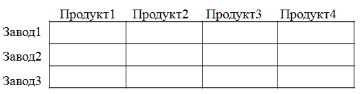
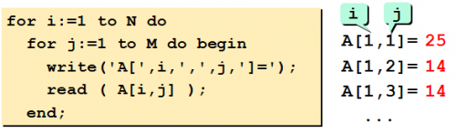

Матрица или двумерный массив – это прямоугольная таблица чисел (или других элементов одного типа). Каждый элемент матрицы имеет два индекса (номер строки и номер столбца).

Исходные данные для решения многих задач можно представить в
табличной форме:

Таблица результатов производственной деятельности нескольких
филиалов фирмы может быть представлена так:
Или в виде двумерного массива так:
Объявление двумерного массива:
Описание, ввод и вывод элементов двумерного массива
Варианты описания двумерного массива (традиционный pascal)
- Описание массива в разделе переменных:
- Описание массива через раздел type:
Ввод двумерного массива m x n с клавиатуры:

Заполнение случайными числами:

Вывод элементов двумерного массива m x n:
Следующий фрагмент программы выводит на экран значения элементов массива по строкам: